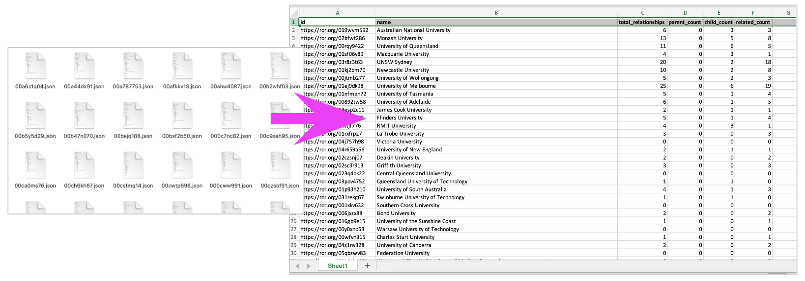
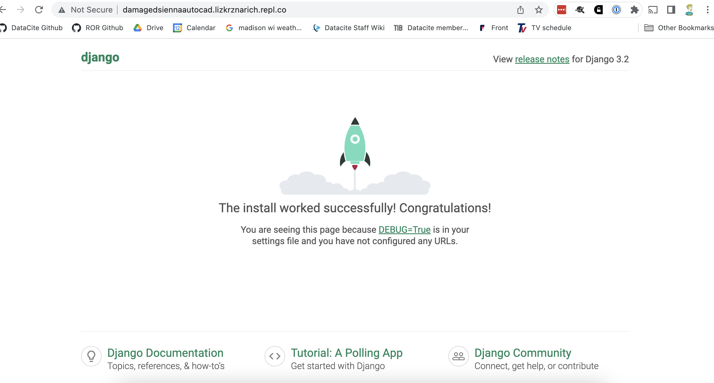

We create welcoming, supportive and accessible environments for women and non-binary adults to learn software development.
We are dedicated to providing a welcoming and comfortable environment for all to learn coding.
Code of conduct
Check out all of our classes & events girldevelopit.com
This may change if we end up needing more or less time for certain topics.
(note: Python 1 series included classes 1-6)
Have lots of files you need to combine, extract data from, clean up, rename or format into a nice report? We can do that!
We don't want users (or ourselves) to see mysterious errors at runtime
Traceback (most recent call last):
File "", line 1, in
TypeError: 'type' object is not iterable
>>>
We want to provide fallback code or a useful error message
try:
for item in list:
do_really_cool_thing()
except:
print("Oh noes! Something went wrong with an item:"")
print(item)
"Hypertext transfer protocol" sounds like it's from 1995, but it's still the way data gets around on the Web!
We'll learn how to use the requests module to get data from external sources, like APIs
import requests
r = requests.get('https://api.github.com/users/lizkrznarich')
print(r.status_code)
200
print(r.json())
{'login': 'lizkrznarich', 'id': 8026886, 'node_id': 'MDQ6VXNlcjgwMjY4ODY=', 'avatar_url': 'https://avatars.githubusercontent.com/u/8026886?v=4', 'gravatar_id': '', 'url': 'https://api.github.com/users/lizkrznarich', 'html_url': 'https://github.com/lizkrznarich', 'followers_url': 'https://api.github.com/users/lizkrznarich/followers', 'following_url': 'https://api.github.com/users/lizkrznarich/following{/other_user}', 'gists_url': 'https://api.github.com/users/lizkrznarich/gists{/gist_id}', 'starred_url': 'https://api.github.com/users/lizkrznarich/starred{/owner}{/repo}', 'subscriptions_url': 'https://api.github.com/users/lizkrznarich/subscriptions', 'organizations_url': 'https://api.github.com/users/lizkrznarich/orgs', 'repos_url': 'https://api.github.com/users/lizkrznarich/repos', 'events_url': 'https://api.github.com/users/lizkrznarich/events{/privacy}', 'received_events_url': 'https://api.github.com/users/lizkrznarich/received_events', 'type': 'User', 'site_admin': False, 'name': 'Liz Krznarich', 'company': 'DataCite', 'blog': '', 'location': None, 'email': None, 'hireable': None, 'bio': None, 'twitter_username': None, 'public_repos': 17, 'public_gists': 4, 'followers': 10, 'following': 0, 'created_at': '2014-06-30T13:28:04Z', 'updated_at': '2023-01-05T12:47:53Z'}
Django is a popular framework for building Python web apps quickly
We'll use it to build a small app that fetches data from an API and displays it in a web page.
Python 2 builds on Python 1, so you should be familiar with the basics covered in that class: